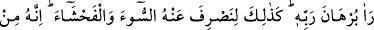

ZÜLEYHÂ’NIN TUZAĞI
23. Evinde bulunduğu kadın, onun nefsinden murâd almak istedi, kapıları iyice
kapattı ve “Haydi gel!” dedi. O da: “Allah’a sığınırım! Doğrusu (senin kocan)
benim efendimdir, o bana güzel baktı. Gerçek şu ki zâlimler iflâh olmaz!” dedi.
24. Andolsun ki kadın ona meyletti. Eğer Rabbinin işaret ve ikazını görmeseydi o
da kadına meyletmişti. İşte böylece biz, kötülüğü ve fuhşu ondan uzaklaştırmak
için (işaretimizi gösterdik). Şüphesiz o ihlâsa erdirilmiş kullarımızdandır.
“Evinde bulunduğu kadın, onun nefsinden murâd almak istedi.”
“
/murâd almak istemek, birinden bir şey istemek mânâsındadır. Bir kimse, bir
şey istemek için gelip gittiğinde kullanılır. Bu mânâ, tek yanlı bir isteği ifade etmekle
birlikte bu isteğin sebebi, karşısındaki kişiden kaynaklandığından dolayı karşılıklı
istemeyi ifade eden bir kalıp (müfâale) seçilmiştir. Çünkü kadının murâd almak
istemesi, Yûsuf’un cemâlinden ileri gelmişti. Bu kelime, “
(hekimin tedavi
etmesi)” ifadesine benzer. Hekim esasında hastayı değil, onda bulunan hastalığı
iyileştirmektedir.
Âyette murâd edilen mânâ şudur: Züleyhâ, maksadına nâil olmak için Yûsuf’un nefsini
kullanarak ona tuzak kurdu. Yani birisinin elinde bulunan ve elinden çıkarmak
istemediği bir şeyi hîle yoluyla ondan almak isteyen birinin o kişiye yaptıklarını yaptı.
Bu da, o kadının, Yûsuf’u kendisiyle cinsî ilişkiye girmesi için kurduğu tuzaktan
ibarettir.
Âyette kadının açıkça zikredilmeyip ‘evinde bulunduğu kadın’ diye ifade edilmesi,
murâd alma isteğinin gerçekten var olduğunu göstermek içindir. Çünkü Yûsuf’un kadının
evinde kalması onda böyle bir isteğin uyanmasına çağıran sebeplerden birisidir.
Bir kadına: “Seni şu bulunduğun hayırsız duruma sürükleyen şey nedir?’ diye soruldu.
Şöyle cevap verdi: “Yastığın yakın, gecenin de uzun olması.”
Bu mesele ayrıca Yûsuf’un nezâhetinin kemâlini ortaya koymak içindir. Çünkü kadının
güzelliğini devamlı görmesine rağmen ona meyletmemesi ve onun mülkiyetinde
olmasına rağmen ona karşı koyması Yûsuf’un iffet ve nezâhetin en üst mertebesinde